SFX-Calc User Guide
Introduction
SFX-Calc is a calculator app designed for academic, scientific and engineering purpose. The calculator features:
- Basic arithmetic calculation: Plus, Minus, Multiply, Divide
- Calculation with one operand fixed as constant
- Calculation with an non-volatile memory storage
- Calculation with 10 volatile memory storages
- Fraction and percentage calculation
- Binary / Octal / Decimal / Hexadecimal calculation
- Various functions like Trigonometric, Hyperbolic, Logarithm, Exponential, Power, Root, ... etc.
Usage
Display
The calculator can display up to 10 main digits + 2 exponential digits. Various numeric formats can be displayed in different states of operation:
Numeric format | The display will show ... |
Integral |
|
Decimal |
|
Exponential | 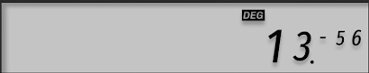 |
Fractional | 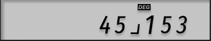 |
Hexadecimal | 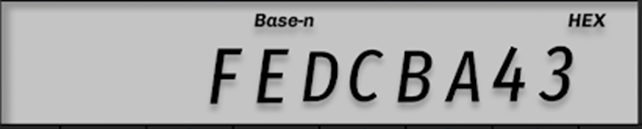 |
Error |
|
The display has a top bar to indicate the current state of operation:
When ... | The display will show ... |
A non-zero value is stored in the non-volatile memory | 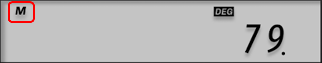 |
The calculation has one operand fixed as constant | 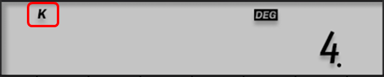 |
Performing Binary / Octal / Decimal / Hexadecimal calculation | 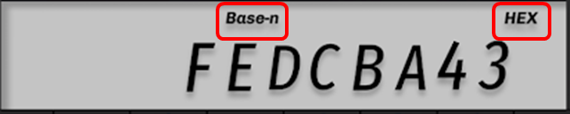 |
Performing Trigonometric calculation with different angle unit (DEG / RAD / GRA) |
|
Key
- All Cancel
- Clear the current operation
- Clear the fixed constant operand
- Clear the display result
- Release the error state
- Alternative Function
- Enable alternative function from other function keys
- Mode Set
- : Normal computation mode
- : Base-n mode for Binary / Octal / Decimal / Hexadecimal calculation
- : Trigonometric calculation will be conducted with Degree unit
- : Trigonometric calculation will be conducted with Radian unit
 : Trigonometric calculation will be conducted with Gradian unit
: Trigonometric calculation will be conducted with Gradian unit
- to and Digits and dot
- Input numerals for integral and decimal value
- Exponent entry
- Input exponent of base 10
- The value will be displayed in exponential format
- Plus
- Perform addition of the 1st (X) and 2nd (Y) operand:
- Tapping twice will store the 1st (X) operand as constant (C) for subsequent addition:
- Minus
- Perform subtraction of the 1st (X) and 2nd (Y) operand:
- Tapping twice will store the 1st (X) operand as constant (C) for subsequent subtraction:
- Multiply
- Perform multiplication of the 1st (X) and 2nd (Y) operand:
- Tapping twice will store the 1st (X) operand as constant (C) for subsequent multiplication:

- Alternative function is to raise the 1st (X) operand to the power of 2nd (Y) operand:
- 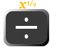Divide
- Perform division of the 1st (X) and 2nd (Y) operand:
- Tapping twice will store the 1st (X) operand as constant (C) for subsequent multiplication:
- Alternative function is to take 2nd (Y) operant root of 1st (X) operand:
- Equal
- Conduct the 2 operands calculation and display the result
- Alternative function is to conduct percentage, premium, discount calculation
- 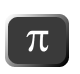Pi
- Recall the constant value pi (3.14…)
- 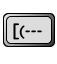Open bracket
- Open a new bracket to start prioritized calculation. Nesting of up to 99 pairs of brackets are allowed
- Close bracket
- Close the nearest bracket to finish prioritized calculation
- 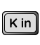Store volatile memory
- Store the currently displayed value into one of the 10 volatile memory spaces
- The volatile memory space can be selected from to
- 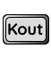Recall volatile memory
- Recall the value from one of the 10 volatile memory spaces
- The volatile memory space can be selected from to
- Display value in engineering exponential format (forward direction)
- Display value with decimal point shifted and in the form of
- Tapping subsequently will display the value in the form of so on
- Alternative function is to conduct permutation of 1st (X) and 2nd (Y) operand:
- When the calculation mode is base-n, tapping can switch to Decimal and (Alternative function) Binary calculation
- Display value in engineering exponential format (reverse direction)
- Display value with decimal point shifted and in the form of
- Tapping subsequently will display the value in the form of so on
- Alternative function is to conduct combination of 1st (X) and 2nd (Y) operand:
- When the calculation mode is base-n, tapping can switch to Hexadecimal and (Alternative function) Octal calculation
Limitation
The calculator has